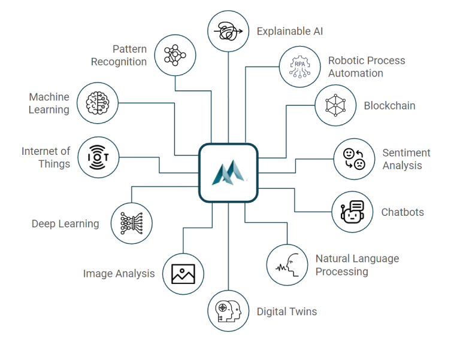
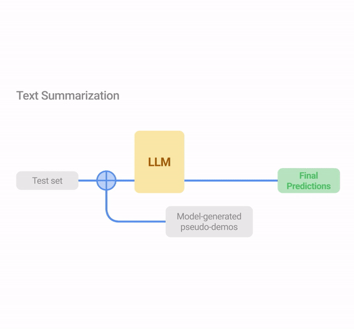

Education
-
Master of Technology in Computer Science Engineering
Indian Institute of Technology, Gandhinagar, Gujarat
Duration: 06/2022 - 05/2024
-
Master of Technology in Biological Engineering
Indian Institute of Technology, Gandhinagar, Gujarat
Duration: 06/2020 - 05/2022
-
Bachelor of Technology
Lovely Professional University, Jalandhar, Punjab
Duration: 06/2016 - 05/2020

Biotech + NLP, ML , AI: Applying language models to analyze ,and interpret biological
datasets.
AI (Artificial Intelligence): Simulating human intelligence in machines for tasks like
problem-solving and decision-making.

LLMs (Large Language Models): Models like GPTu process and generate human-like
text using deep learning techniques. They can be used for tasks like text summarization,